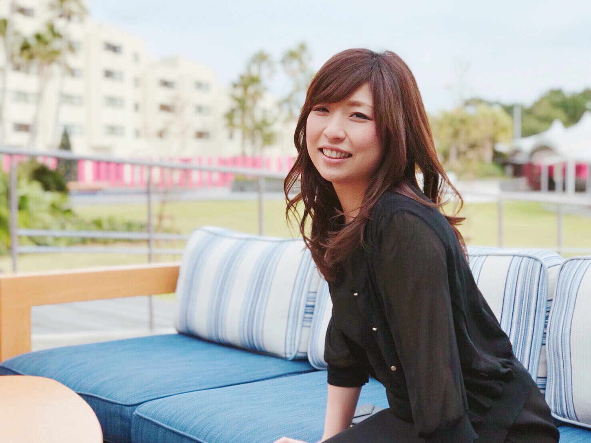
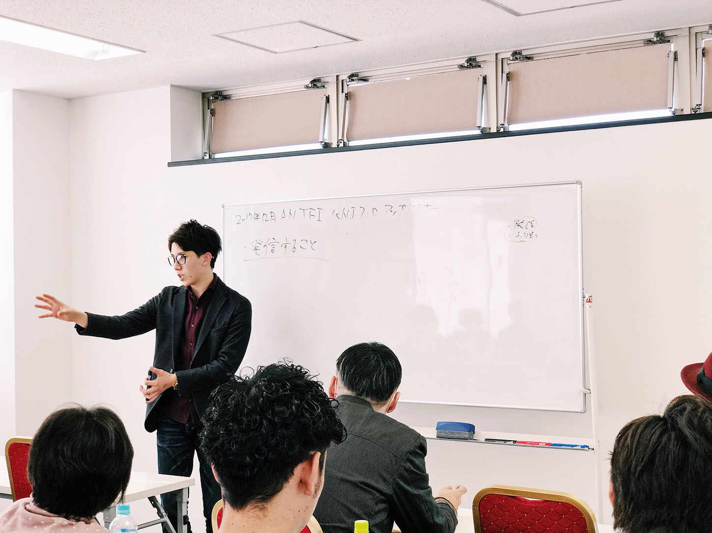
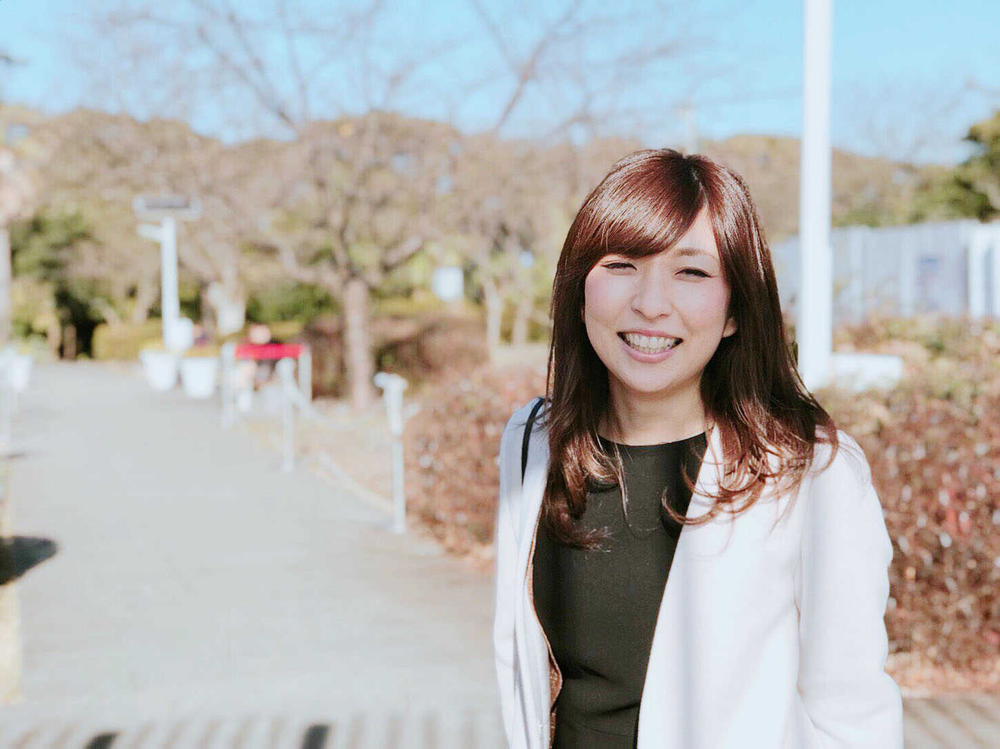
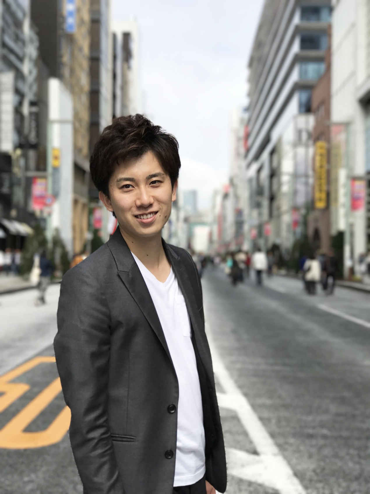
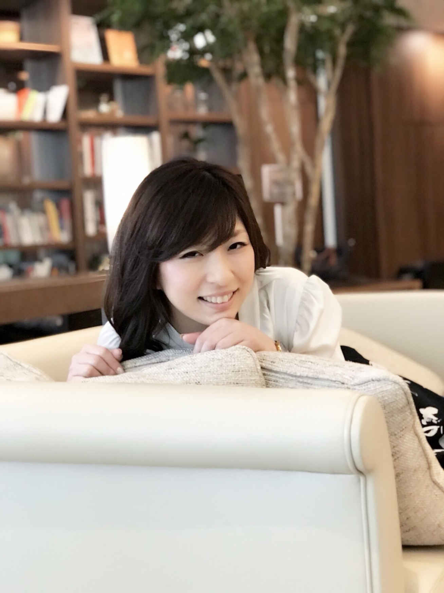
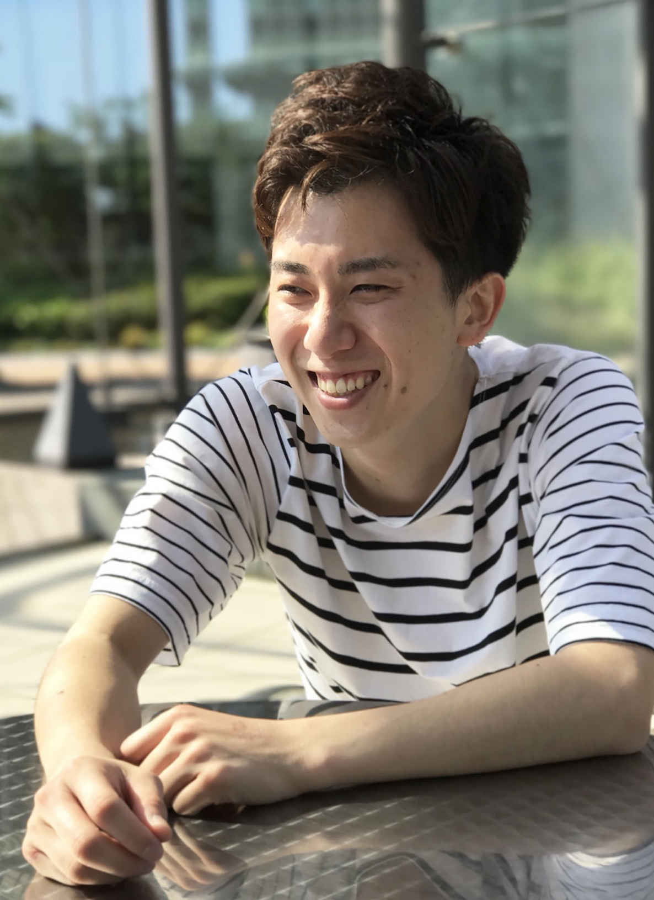

| ワガママに欲張りに理想の未来を叶える 〜仕事と恋愛を両立するヒケツ〜 | |
| 板垣ふみか & 高浜真也(shinn) | |
| Hitotsuku Publication (2018) | |
板垣ふみか・高浜真也(shinn)
仕事をがんばっている時期は、恋愛がうまくいかない。逆に恋愛に夢中になっている時期は、仕事がうまくいかない。そんな女性は多いのではないでしょうか。
もし、両方ともをうまくいかせる方法があるなら、知りたくありませんか？
今回この書籍で対談させていただている女性起業家の板垣ふみかさんも、仕事と恋愛の両立に悩まれていた女性の１人です。
半年前まで普通の会社員として働かれていた、ふみかさん。恋愛体質なこともあり彼氏は途切れないものの、なかなか仕事と恋愛のバランスがうまくとれずに苦労されていました。
そんな彼女は起業を決意し、マインドに関する学びや素敵な女性との出会いなどを通して「仕事だけ恋愛だけじゃなくて、両方叶えられる方法があるんだ」
と気づいたといいます。
仕事と恋愛の両立が叶う〝ワガママ欲張りマインド〟
を手に入れた現在のふみかさんは、起業家として活躍されており、恋愛もうまくいき、彼とのパートナーシップも良好です。
平凡だった彼女が〝ワガママ欲張りマインド〟を手にしたことで、なにが変わり、どう変貌を遂げたのか。
ふみかさんの変身ストーリーが、仕事に対して、恋愛に対して、その両立について悩んでいる女性の方のお力になれればと思っています。

男性からすると「ワガママ」や「欲張り」は、あまり良い印象を抱かない言葉のように僕は思います。ですが、ふみかさんはこの２つを良しとして、実際に仕事も起業も恋愛もうまくいっている女性です。
一体、〝ワガママ欲張りマインド〟とは何なのでしょうか？ どうやって作られ、どうしてうまくいっているのでしょうか？
高浜真也(shinn)（以下、shinn）：
〝ワガママ欲張りマインド〟を手に入れる前のふみかさんは、どんな感じだったんですか？
板垣ふみかさん（以下、ふみか）：
半年前まで会社員をしていたんですが、その時は仕事と恋愛の両立というか、バランスのとり方にすごく悩んでいましたね。
どっちかを頑張るとどっちかがうまくいかなくなる、みたいなのを繰り返していました。
shinn：
元々は仕事と恋愛、どっちにどっぷりだったんですか？
ふみか：
20
代前半は、恋愛に依存してしまうタイプでした。その後、エステサロンの店長などを経験させていただいたのがキッカケで、今度は仕事がすごく大好きになって。
shinn：
恋愛だったのが、仕事に思いっきりメーターが傾いたということですか？
ふみか：
そうですね。恋愛がかなり疎かになってしまいました。
この時からという訳ではないんですが「仕事も恋愛も、どっちもうまくいく方法ってないのかな？」と、ずっと考えるようになったんですね。
「恋愛も、仕事も、両方叶えたい」と思ったところからがスタートでした。
shinn：
なるほど。確かに、世の中の女性は「仕事か恋愛かのどっちだけ」という人が多いように思います。
20
代のふみかさんのようにかなりの恋愛体質の方か、エステサロンの店長をやられていた時のようにキャリアウーマンかみたいな。
両立したいけれど、メーターをうまく真ん中に合わせられない感じですよね。
ふみか：
まさにそうなんです！ しかも私だけじゃなくて、サロン時代のスタッフもそうで......。
なにか仕事をふろうとしたときに「今日元気ないな」とか「モチベーションが最近あがってなさそうだな」と感じて聞いてみると、「彼氏と実は喧嘩してて......」みたいなことが多かったですし、逆に仕事を頑張っている人は何年も彼氏がいないといった感じでしたね。
shinn：
そういう方、おられますね。
ふみか：
周りに仕事と恋愛の両立が出来ていない人が多かったので「私が乗り越えることで、解決する方法とか考え方とかを伝えられるんじゃないかな？」と思ったところが、〝ワガママ欲張りマインド〟を手に入れるキッカケになりましたね。
shinn：
で、最初に取り組まれたのが起業？
ふみか：
ずっと起業したいと思っていたんです。会社員としてエステサロンで働く中で、会社が倒産しかけたりとか、色んな出来事があったのが１つ目の理由ですね。
もう１つは、お子さんを生んで産休をとってから、エステサロンに復帰して働かれている方を見てきたことですね。
エステの仕事はハードですごく忙しいので、家族との時間がなかなかとれなかったり、土日に休みがとれなかったりして悩まれてたんですね。
そんな姿を見て「もっと女性が自由に、働ける環境を作りたい」
と思ったのも起業のキッカケです。エステサロンの店長をさせていただく中で、みんなを幸せにしてあげたいじゃないですけど、そういう責任感というか......。
shinn：
導かなきゃみたいな？
ふみか：
そうですね。そのためにも、まずは私が動いて、そういう場所を作っていこうと思ったんです。
shinn：
なるほど。ただ、起業したいという想いを抱きつつ、恋愛もしたかった？
ふみか：したかったです。したかったんですけど、まずは起業に向けて動き出したんですよね。
すると、活躍されている女性起業家の方たちにお会いする機会も増えました。と同時に、仕事も恋愛も両方うまくいっている女性が少しずつ自分の周りに現れ始めたんです。
「彼女たちはどうやって両立させているんだろう？」
と、そういう方たちのいいところをピックアップしながら、起業に向けてもマインドや考え方を学んで実践していく中で、自然と仕事も恋愛も両方うまくいく〝ワガママ欲張りマインド〟が出来上がっていたんです！
shinn：
起業をキッカケとした学びや出会いを通じて、女性にとって永遠のテーマである「仕事と恋愛の両立を解決する」ワガママ欲張りマインドが構築されたというのは興味深いですね。

shinn：
実際に〝ワガママ欲張りマインド〟をふみかさんが実践される中で、意識しているポイントはあったりしますか？
ふみか：
恋愛も仕事もうまくいくために、大事な考え方がありますね。まず、女性の恋愛がうまくいかないパターンは大きく分けて２つあるんです。
shinn：
２つ？
ふみか：
男性に依存しすぎているパターン
と、仕事しすぎて自立してしまっているパターン
の２つです。shinn さん、男性的にこれって理解できますか？
shinn：
理解というか、僕が今までお付き合いしてきた女性の中には両方ともいましたね。
ただ圧倒的に、男性に依存している人が多かったです。これは僕のせいなんですかね？
ふみか：
それは shinn さんがビジネスに集中されているからというか......。
shinn：
今はビジネスですし、学生の頃は勉強とか建築のデザインとかですね。学校にずっと寝泊まりしてました。
ふみか：
仕事とか、なにかに集中されているタイプの男性には、恋愛依存タイプの女性が寄ってくると思います。
shinn：
僕自身も、自立している女性ではなく、依存する女性を選んでいたのかもしれません。
ふみか：
男性や恋愛に依存するタイプの女性は、依存しすぎて仕事が手につかなかったりしますよね。彼があまり自分に対して時間をとってくれなかったり、会えないことに対して不満をぶつけてきたりという方も多いと思います。
一方で、少数派ではあると思うんですけど仕事が好きな女性、いわゆるキャリアウーマンという方もいます。
バリキャリタイプの方は、恋愛をあまり重視していない部分があるので、彼氏が何年もいないとか、いたとしても彼との時間をそんなに大事にしてなかったりとか......。
でも本音の部分では、彼に対して会えなくて寂しいという気持ちは持っているんです。持ってはいるものの、「嫌われるかもしれないから言っちゃいけない」と我慢してますね。
shinn：
言っちゃいけない？
ふみか：
「寂しい」とか、「もっと会いたい」とか。バリキャリタイプの方は、心の中で思っていても言わないんですよね。
ワガママ欲張りマインドでは、ここまでご紹介した男性依存タイプと自立しすぎたバリキャリタイプの２つのバランスをうまくとるのが、すごく大事になってきます
。
shinn：
依存と自立のバランスをうまくとるということですか？
１）男女の価値観を理解する
ふみか：
そうです！ そのために大事なポイントが３つあります。
１つ目は、男性と女性の価値観の違いを理解すること
。
例えば女性にとって大事な価値観というと、家族とか恋人、恋愛とかが優先順位の高いところにくる思うんです。ですが、男性の場合は、仕事とか成功とかお金とかが上位にきますよね。
shinn：
一見すると、ズレているように見えますね。
ふみか：
そう見えるんですけど、男性にとって仕事の成功や〝お金を稼ぐことは、パートナーの幸せのためだったり、家族のためにやってること
じゃないですか。
この大前提を、女性が理解する必要があります。
ここを理解できていれば、旦那さんが休みの日に接待でゴルフに行くとか、同僚と夜飲みに行くとかを、「自分たち家族のための、付き合いなんだ」と分かるはずなんです。すると、旦那さんに依存することも少なくなりますし、お互いに理解もし合えるんです。
shinn：
なるほど。
ふみか：
男性も、女性に対して「仕事を頑張るのは、家族第一に思っての行動だよー」とか、常に伝え続ける努力をする
。これが、パートナーシップがうまくまわる秘訣なんですよね。
２）ポジティブな言葉・空気作りを意識する
ふみか：
そして価値観の違いを伝えるときは、上手に伝えることを意識してほしいです。
shinn：
伝え方が大事ってことですね？
ふみか：
そうですね。たとえば、自分の仕事が忙しくて会えないと伝えたとき、shinn さんはこれまで女性にどんな感じのことを言われたことがありますか？
shinn：
「なんで会えないの？」とか「私と仕事どっちが大事？」とかですかね。
ふみか：
よくあるフレーズですね。他にも「なんでやってくれないの？」とか「私のこと嫌いなの？」とか、そういうネガティブな感じで言っちゃう人が多いと思います。これは恋愛に、男性に依存しているタイプですね。
でも、何も言わないというのもよくありません。それは自立しすぎのバリキャリタイプになっちゃうんですね。
ですから、思っていることをできるだけポジティブな言葉で伝えることが大事
です。
shinn：
ポジティブな言葉で伝える？
ふみか：
「寂しい」じゃなくて、「会えなくて寂しいけど、頑張ってきてね」とかですね。でも言葉だけじゃ伝わらない部分もあります。
だから、一緒にいる時間を楽しんだり、幸せに過ごすことを心がけておくも大事です。
例えば２人で過ごしているときに、いつも「なんでその日は会えないの？」とか「私のこと本当に好きなの？」とか、そういうネガティブなことを言ってくる彼女と、いつもニコニコ笑顔で寂しいと思いつつも「行ってらっしゃい」と送り出してくれる彼女だったら、どっちを選びますか？
shinn：
圧倒的に後者ですね！
ふみか：
ですよね？ そういう彼女でいれば、どんなに忙しくても合間を見て会いに行くと思うんですよ。
shinn：
確かに、会いたくなりますね。なんか申し訳ない気持ちと、自分がなにかを伝えたい気持ちが出てきますね。
ふみか：
だから、想いをできるだけポジティブな言葉で伝えることと、一緒に過ごしてる時間を「楽しい」「癒される」と男性に感じてもらえるように心がけることが大事
なんです。
３）自分で自分を幸せにする力を身につける
ふみか：
あとこれが一番大事なポイントになると思うんですが、自分で自分を幸せにする力を身につけてほしいですね。
私は起業することで解決できた部分なんですが、自分が心から楽しいと思うことや夢中になれることを、彼との時間とは別に持っておくことで会えない時間が苦痛にならない
というか。
shinn：
なるほど！
ふみか：
「そっちもそっちで楽しいことがあるんだろうけど、私にもあるからね」という状態を作ることで、ポジティブでいられやすくなりますし、彼を笑顔で「行ってらっしゃい」と送り出してあげられるようになります。
私自身も意識して、自分を幸せにする時間を持ったりとか、自分１人でも楽しめる心を作ることをすごく大事にしていますね。
shinn：
男性側からすると、ふみかさんがお話してくださったポイントを押さえた女性だと、すごく嬉しいです。依存されちゃうと「かまってあげないといけない」と思って、苦しくなったりしますし......。
彼女が他に楽しみを持って、そっちばかりに集中されると少し寂しい気持ちになる人もいるかもしれませんが、女性は女性で、幸せでありながら、こっちにもきてくれるんなら嬉しいですね。
すごい勉強になります！
ふみか：
ありがとうございます。ただ、ここまでご紹介した３つのポイントを実行していく上で、押さえておくべき大事な考えがあります。
それは、私が起業を進めて行く中で出会ったマインドセットの１つで、shinn さんが仰ってた「全てのことは、自己責任」
というものなんです。
shinn：
ビジネスをやる上で、すごく重要なマインドセットですね。
僕は会社経営者なので、自己責任でやっていかないといけません。誰かのせいにしてたら、会社が潰れちゃうんで。
ふみか：
私は「常に自分に矢印を向けて、うまくいかなかったらうまくいかない事実を認めて、自分ができないことも認めて、その上で自分にできることはないかと、改善策を考えていく」という意味だと捉えているんですが、これって恋愛も同じだと思っているんです。
shinn：
どういう風に恋愛とつながるんでしょうか？
ふみか：
昔の私は、彼にとって完璧な人でいなきゃいけないんじゃないか。彼が求めるような人でいなきゃいけないと思い込んでいたんですね。
例えば、彼が「自立した人が好き」と言ったら、自立した人を演じなきゃいけないとか。「料理好きな人がいい」と言われたら、料理できるように頑張らなきゃいけないとか。
shinn：
健気ですね！
ふみか：
どの女性にも、少なからずそういうところがあると思いますし、努力するのは大事なことです。
ただ、苦手なことは苦手なことと認めて「じゃあ自分ができるのはここまで」としてみるとか。自分より彼の方が得意なのであれば、そこは思い切ってお願いしてみるとか
。
shinn さんが仰ってた「全てのことは、自己責任」というマインドセットから、こういう考えに結びついたんですよね。実際に、私はこの考え方をすごく大事にしていて、仕事も恋愛もうまくいっているので、もっと女性に実践してほしいなと思っています。
shinn：
人とか彼氏とか仕事に対して矢印を向けるんじゃなくて、常に自分に矢印を向けて考えて行動してほしいと？
ふみか：
やっぱり恋愛がうまくいかないと、つい「彼が忙しくて会ってくれないからだ」とか、相手のせいにしてしまうことってよくあると思うんです。
shinn：
ああ！ ありますあります。
ふみか：
「彼のほうが仕事が忙しくて、なかなか時間をとってくれないからだ」とか、「ＬＩＮＥが返ってこない」とか。
shinn：
男性陣には耳が痛い話かもしれません......。
ふみか：
でもそれって、彼氏に矢印が向いてるんです。そこで矢印を自分に向けてみてほしい
なって。
例えば、会えないとか連絡がこまめに来ないとか、彼の行動を変えることは出来ませんよね？
でも「じゃあどうしたら彼が会いたいと思ってくれるだろう？」と考えることは出来ます。
会いに来てもらうために、一緒にいる時間をとにかく楽しんでもらうようにしたりして、忙しくても時間が空いたら「会いにいきたいな」と思ってもらえるように行動する、とかね。
そうやって自分に矢印を向けることで、恋愛がうまくいくようになるんです。
shinn：
これはすぐにでも実践できる考え方ですね！

何事にも言えますが、理解していても、身につけて実践していこうとすると、壁にぶつかるものです。
この章では〝ワガママ欲張りマインド〟を手に入れるための鍵となる、恋愛でも仕事でも存在する男女の違いについて、ふみかさんに解説してもらいます。
shinn：
ふみかさんは〝ワガママ欲張りマインド〟を手に入れたきっかけが、起業だったと思うんですが？
ふみか：
はい、そうです。
shinn：
そんなふみかさんだからこそお聞きしたいんですけど、雇われて仕事するのではなく、「独立して好きなことを仕事にしたい」「自立したい」という方がたくさんいると思うんです。
僕もそういう『起業女子』と言われる方といっぱい出会ってきましたし、うまくいかない人や途中で消えていく人も見てきました。その中で、ふみかさんは〝ワガママ欲張りマインド〟でうまくいってますよね。
なんでうまくいっているのか、ふみかさんなりの成功法則があったらお伺いしたいです。
ふみか：
まず大前提として「女性にとっての成功と男性にとっての成功は違う」
。これをきちんと理解することが大事になってきます。
「起業する」となると、すごく頑張らないといけない、自分の身を削ってまで頑張らないといけないみたいなイメージがあると思うんです。
shinn：
男性にとっての成功は、そういうイメージですよね。がりがり徹夜でやって、掴み取るみたいな。
ふみか：
なので、「数年以内に結婚したいから、起業よりも優先したほうがいいんじゃないか」という風に考えて踏み出せない人とか、起業に向かって進んでても頑張りすぎてしまって、途中で諦めてしまったり挫折してしまったりする人が、周りを見ていて多いのかなと感じています。
shinn：
男性で、バリバリやってる人が成功するイメージにはなってるとは思います。でも、本来進むべき方向が男性と女性で違うんですよね。成功の形しかり、幸せしかり......。
なのに、男性としての成功や幸せの形をイメージしてしまって、方向が分からなくて、迷子になっちゃってる女性が多いのかなと僕は思っているんです。
ふみか：
すごく多いですね。起業について、男性から学ぶのか女性から学ぶのかによっても違うと思います。
私が shinn さんから学んでいるように、男性のメンターから学ぶと、男性的な成功法則からアドバイスをいただくんですね。その方が通ってきた道なので、当たり前の部分はあるんですけど。
この時に、自分の理想を絶対に忘れないことが大事なんです。
私の場合だと、恋愛、パートナーとの幸せと起業、ビジネスを成功させること。この両方を叶えることが理想なので、恋愛だけ、仕事だけとかどっちかしか叶わない選択はしてはいけないと思っています。
だから常に「仕事を頑張りすぎてしまうと、恋愛が疎かになるな」と感じたら、いただいたアドバイスをそのままやるんじゃなくて一旦止まる。バランスをとれるような方法を考えたりするようにしています。
これは shinn さんからアドバイスをいただく時だけじゃなくて、周りにいる起業仲間と話すときにも意識していることです。
shinn：
なるほど。なんか分かった気がします。
男性の成功は「なにかを捨てて、その代わりに残った方で頑張らないといけない」
みたいなのがあるんですよ。
恋愛とかを捨てて、捨てた代わりに仕事をバリバリやる。だって恋愛は疎かになっちゃうから。それもあって仕事をやる目的に、好きな人と過ごすためにとかはあんまりありませんね。
特に起業となると、男性の場合は「捨てれるものは捨てて、捨てた分こっちを高めなきゃ！」という思考にたどり着くと思うんですけど、女性は同じようにやっちゃダメなんですね。
ふみか：
男性は元々、メンタル面でも我慢できる器が広いんですね。なので「ここを頑張って乗り切れば、幸せがある」と思ったら、今がすごくキツくても頑張れるところがあると思います。
でも、女性の場合は幸せへの過程も楽しくないと登っていけない
んですよ。
shinn：
分かります分かります。つまり、男性はゴールがキラキラしていたらいいけれど、女性はゴールまでの過程もキラキラしていないとダメってことですね。
〝ワガママ欲張りマインド〟を手に入れて、仕事も恋愛もうまくいかせたい女性は、この男性と女性の成功の違いをまず理解することが大切になってくるんですね。
ふみか：
あと、これは自立しすぎ系バリキャリタイプの女性にすごく多いんですが、つい彼や旦那さんとも張り合う癖がついているというか......。負けたくない気持ちが強すぎるというのがあるんですよね。
shinn：
私の方が年収が高いとか？
ふみか：
そうですね。男性と一緒に仕事だったりと過ごしてきた期間が長い、ＩＴ系にお勤めの方や営業をされている方、理系女子の方とかに多いですね。
男性と肩を並べて頑張ってこられているので、彼が仕事の成果を「こういうことがあったよー」と報告してくれたときに、張り合ってしまうというか......。
多分、男性側としては褒めてほしかったり、「すごい」と言ってほしかったりして報告してると思うんです。なのに「私はもっとすごいのよ」と自分の成果を言っちゃったり、更に良くなるようにとアドバイスをしちゃう女性が多いのかなと。
shinn：
男としては、それされたらイヤですね。やっぱり。
ふみか：
男性のプライドとか......ね？
shinn：
そうですね。「守ってあげたい」という気持ちとかが薄れてしまいますよね。
ふみか：
男性から「守ってあげたい」と思ってもらえるかどうかは、パートナーシップにおいて大事だと思っていて。だから張り合わないでほしいんですよね。
男性とは「戦う畑が違う」と捉えて、数字とか成果とかを言うのではなくて、「お客様にこういう言葉をもらって嬉しかった」とか、起業されてる方であれば「生徒さんからこういう言葉をもらった」とか。
男性とは違う部分でアピールするというか、知ってもらうようにするのが大事
なんです。これを意識すると、男性と張り合わなくて済みますし、お互いに尊敬が生まれて関係性が良くなります。
shinn：
僕も男だから分かりますが、男性は数字とか地位とかをすごく意識しちゃうんですよね。目に見えて分かるものが判断基準になるんですけど、女性の場合は「嬉しかった」とか「こういうことを言われて、成長を感じられた」とか「やる気が出た」とか。
男性は有形で、女性は無形
なのかなと、すごい感じました。
ふみか：
この男女の違いを理解しておくと、パートナーシップがうまくいくかなと思います。
shinn：
男性のプライドを傷つけずにすみますし、「お前１人でも生きていけるじゃん」て言われずにすみますね。
男性からの言葉に対して「そうだけど、だからなに？」みたいに張り合っちゃだめってことですよね。当てはまる人はグサグサくるんじゃないでしょうか。
ふみか：
しっかりと男女の違いを理解しておくことが、仕事をうまくいかせるための第一歩ですし、〝ワガママ欲張りマインド'にも欠かせません。しっかり認識してほしいなと思います。

〝ワガママ欲張りマインド〟という言葉の通り、仕事も恋愛もうまくいかせるためには心の部分が大切になってきます。そしてマインドが整うと、自然と発せられる言葉などにも変化が出てくるのです。
この章では仕事にも恋愛にも活かせる、マインドセットと意識してつかっていきたい言葉などをふみかさんにご紹介してもらいます。
ふみか：
shinn さんから学んだマインドを意識するようになってから、パートナーとの関係とか、起業するにあたっての行動が、実は変わったんです。
shinn：
僕がお伝えした「提供のマインド」、「事実は１つ、解釈は無限大」、「人生何事も経験」ですか？
ふみか：
そうなんです！ 実践したら、仕事も恋愛も良い方向へとどんどん転がっていきました。
shinn：
起業する上でお伝えしたマインドセットが、どう恋愛やパートナーシップにも良い影響を与え、〝ワガママ欲張りマインド〟を後押ししたんでしょうか？
１）提供のマインド
ふみか：
私は今までの恋愛で、結構相手からなにかしてもらうことで愛情を確認していたんです。例えば、彼がどこかに連れてってくれるとか、なにかしてくれたとか、そういうところばっかりにフォーカスしていました。
でも「提供のマインド」を知り、「彼のために何ができるかな」と考えたり私から想いを伝えたりと、まず自分が与えることを考えるようにしたら、パートナーとの関係性がすごく良くなった
というか。
shinn：
へぇ〜！
ふみか：
相手がなにをしてくれるかは一切関係ないんだなと。自分がもらうことばっかりにフォーカスしていたときと、すごく関係性が変わったんですよね。
shinn：
僕自身、「提供のマインド」は、起業だけじゃなくて人間関係をうまく保つための秘訣
だと思っています。
「なんかくれよ」というか、「お前のものは俺のもの」みたいなジャイアンじゃなくて、まずは自分から提供する、与えていく。ギブアンドテイクじゃないんですよ。
ギブ＆
ギブ＆
ギブ。ひたすら、まずは自分が「関わりたい」、「一緒に仕事をやっていきたい」とか、「この人は人間的に魅力的だから近づきたいな」と思った人に、全力投球の提供をしていくんです。自分のできることをたくさんしたり、自分の持っているものを提供したりですね。
そうしていくと、返ってくるんですよ。心理学では『返報性の法則』
と呼ばれています。簡単に言えば「誕生日プレゼントあげるよ」と言ったら、「いやいや、返さなくちゃいけないからいいよ」みたいな。
だから、ビジネス、恋愛だけじゃなくて、人間関係を円滑に保つコミュニケーション方法として「提供のマインド」は大事かなと思っています。
２）「事実は１つ、解釈は無限大」
ふみか：
次をご紹介する前にいきなりですが、実は起業をしようと走り出した時、彼にフラれたんですよね。
shinn：
フラれた！？
ふみか：
今までフラれたことがなかったんですけど、初めてフラれて......。
すごくショックでした。ただその時、どちらかというと恋愛にどっぷりハマりそうになってたんですよ。起業をしたいと思ってたのに。
彼は「結婚するなら家庭に入ってほしい」という人で、専業主婦になる女性を求めてたんですね。
shinn：
起業女子じゃなくて、専業主婦を......。
ふみか：
家庭を守るタイプの人を求めていて。なので、私はそういう人になろうとしてたんですよ。
shinn：
ふみかさん自身が？
ふみか：
そうですね。だから「起業をしたい」と思って学びに行ったり自己投資をしたりしていたのに、ちょっと忘れかけていた時期があったんですね。
でも、その人に別れを告げられたおかげで、恋愛にハマりそうになっていたことに気づくことができました。
「事実は１つ、解釈は無限大」。shinn さんのマインドセットでこの言葉を聞いていたので、本当に解釈次第というか、本当に別れてよかったなと解釈できたんですね。だから、すぐ立ち直ることができました。
shinn：
僕は物事の良し悪しは、受け止める本人が決めていると考えています。
例えば、僕がふみかさんに告白して振られたとしましょう。「振られてショックだ！」と、"悪いこと"と捉えることもできるんですけど、振られたことで、より自分のことを理解してくれる素敵な女性に出会う可能性を得たとも捉えられませんか？
つまり、１個の事象そのものに、良し悪しはないんです。捉え方とか、それに対して自分がどういう意味を見出すかによって全然違ってくる
のではないでしょうか。
ふみかさんの起業人生でキーポイントとなるような場面で、役に立っていてうれしいです。
３）人生何事も経験
ふみか：
起業前の彼との別れで踏ん切りがついたのもあって「人生何事も経験」というマインドセットも、実は実行しやすくなりました。
「やりたくないなぁ」と思ったことも、「とりあえず１回やってみたら面白いことあるかなぁ」「なんかネタになるかもしれない」とか、そういう風に考えられるようになったんです。
shinn：
恋愛でいえば、思い切って告白してみるとか、彼のためにやったことのない料理に挑戦してみるとかですかね。
飛び込んだら、宝箱があるかもしれません。可能性があるんだったらいいじゃないですか、やりましょう！ と僕は思います。
ふみか：
それの１つが、この小さいワガママを言葉にするでもあるんですよね。
突然ですが、男性って小さいときから『ウルトラマン』とか『仮面ライダー』とか、戦隊ものに親しんでるじゃないですか。
shinn：
すみません、僕は全く見なかったんですけど。
ふみか：
本当ですか!?
『アンパンマン』は？
shinn：
『アンパンマン』は見てました！
ふみか：
あ、よかったです。戦隊ものやアンパンマンのように「女性を守ってあげたい」とか「自分がなにかしてあげたい」とか、そういう願望があったりしませんか？
shinn：
「主人公になりたい」というのはありますね。
ふみか：
ですよね。「これをやった自分はすごい」というか、「認められたい」というか。「すごい」と言われたい気持ちが多分強いと思うんですよ。
なので、パートナーシップにおいても、うまく活用するといったらあれですけど、そのヒーロー願望を満たすのがすごく大事なんです。
例えば、ちょっとワガママを言ってみたりとか......。ワガママは、あまり良い言葉に聞こえないと思うんですけど。
shinn：
そうですね。どちらかというと、マイナスな言葉だと思います。
ふみか：
なんですけど、小さくて可愛いワガママを言って、それを叶えてもらうことが大事になってくるんです。
例えば、「ペットボトルの蓋が開けられないから開けてほしいと」か。絶対に叶えられるものじゃないですか？
shinn：
すぐに開けますね！
ふみか：
ですよね！ 女性には難しいけど、男性にとっては簡単なことが結構たくさんあると思うんです。そういうのを頑張ってやらずに、任せる。頼る。そして、叶えてもらったときに、すごい喜ぶ
。
例えば「高いところにあるものを取ってほしい」とか、「どこかに連れてってほしい」とか、「ちょっとだけ声が聞きたいから電話したい」とか。
そういうちっちゃいワガママ、男性にとって叶えてあげられないことはないワガママをたくさん言って、叶えてもらって喜ぶ。
こうやって、彼のヒーロー願望を満たすと「もっとやってあげたいな」とか「これをやったら彼女が喜んでくれるからやってあげよう」とか。そういう気持ちがどんどん出てくると思うんです。
shinn：
叶えられるレベルの小さいワガママを言って、それを彼氏に叶えてもらう。
彼女が困っていて「助けて」と言っているのをやってあげたヒーローみたいで、こうやって彼のヒーロー願望を満たしていくということですかね？
ふみか：
そうですね！
shinn：
ああ、すっごい腑に落ちました。
例えば、僕が東京にいて沖縄に彼女がいて、「寂しいから今から会いに来て」と言われたら、瞬間に電話切っちゃうかもしれません。
でも「ちょっと声が聞きたいから電話して」とかだったら叶えたくなるというか。それで喜んでくれたら、すごくうれしいですし。遠くにいながらでも、役に立てたじゃないですけど。
ふみか：
すっごいめんどくさいことや無理なことじゃなくて、小さい可愛いワガママをたくさん言って、それを叶えてもらって、全力で喜ぶ。
そうやって彼のヒーロー願望を満たすことができれば、さらに大切にしてもらえるっていう。
shinn：
これは男性の僕も、勉強になりました！ 女性からの小さいワガママ、叶えていきたいと思います。
ふみか：
「小さいワガママを言葉にしよう」と言いましたけど、仕事だと結構普通のことだったりしますよね。起業する前から心がけていることでもあるんですが、「実現したいことを口に出すといい」と言われていますよね？
shinn：
口に出したり、紙に書くのもいいと言われていますね。
ふみか：
「紙に書く」もやっていたんですけど、私は実現したいことを言葉にする時に、絶対に応援をしてくれる人とか、肯定的なことを言ってくれる人に向けてというのを意識してやっていたんです。同じように起業したい友だちとか、心理学のスクールで知り合った仲間とか。
口にしていたことも、ありえないくらい大きな夢というか、今の自分では想像できないような夢でした。「何百人規模のセミナーをする」とか、「各地を飛び回っている」とか、「海外と拠点を２つ持つ」とか。
それが今、少しずつ形になってきているし、自分の原動力になっている感じです。
だから、口に出すこと、口に出す相手を選ぶことをすごく大事にしています。shinn さんが発起人の朝活もいいですよね。
shinn：
今もやっていますよね！
ふみか：
ビジネスの仲間と長期的な目標をみんなで語り合って、最後にみんなで「絶対できます！」みたいな感じですよね。
朝活を継続してやっていると、みんなどんどん夢が大きくなってくじゃないですか。
shinn：
確かにそうですね！ 僕もそこで新しい夢が見つかりました。
ふみか：
それにみんな１個ずつ進んでて、夢が叶っていってる。それをすごく感じるので、語り合うのはすごく大切だと思うんです。
shinn：
ふみかさんが仰ってる〝語る相手選び〟は、結構大切
ですね。
だいたい「起業します」となったときに、応援してくれる人はなかなか少ないんですよね。普通の人は「起業するの？ 大丈夫？ 失敗するんじゃない？ 最初にお金かかるんでしょ？」みたいな。「事業投資とか自己投資とかしなきゃならないんでしょ？ それ、大丈夫なの？」となりますから。
ふみか：
ですね。
shinn：
だからこそ、相手を選ぶことが大事です。切磋琢磨できる仲間と語り合う。口に出してアウトプットする。
そういう仲間にアウトプットする、頭で考えていたことを吐き出すことで、新しい自分とか、「もっとこうやりたい」という気づきを得られたりする
と思うんです。そういう意味で、朝活もやってますし。
ただ、最初いきなり仲間はいないと思うんですよ。語り合える仲間を作るためには、環境が大切になってきます
。だからそういう仲間ができそうなところにまずは身をおいて、頑張っていってほしいなと思います。
ここまでお読みくださったあなたは「早く私だけの〝ワガママ欲張りマインド〟を手に入れたい！」と考えておられるのではないでしょうか。
ですが、焦りすぎないでください。華麗なスタートダッシュを決めるためにも、最初が大事になってきます。
あなただけの〝ワガママ欲張りマインド〟を手に入れるために、これから具体的にどんなことをしていけばいいのか。ふみかさんにしっかりとお聞きしましたので、ぜひ参考にされてくださいね。
ふみか：
これは、本当に起業を目指し始めたときからやってたことなんですけど、ぜひ真似していただきたくて。
私、元々本を読むのが結構好きで。「起業したい」という気持ちが生まれてからは、家の近くに、TSUTAYA とスタバが一緒になったブックカフェがあったので、そこに１日６〜７時間いるようになったんです。本当に休みの度に。
最初は本を読みに行ってたんですけど、だんだん「私の得意なことってなんだろう？」「今、私はどんなことを考えているんだろう？」とか、自分と向き合う時間にシフトしていったんですね。
なので、最後の方は本を読むのは１時間くらいで、あとはノートとずっと向かい合う時間というか。ノートに自分が感じていることをなんでも書き出す、みたいなことをやっていたんです。
shinn：
なるほど。
ふみか：
今はそこまでたくさんの時間をとることはないんですけど、ちょっと迷ったときとかは、１人になって考える時間をとるようにしてるんですね。
そうすると、本当の自分の気持ちとかやりたいこととかが見えてきて、なんか行動に迷いがなくなくなるというか......。自分の感情を知ることができます
し、それが私はすごく大事だと思っていて。
shinn：
「自分の感情を知る」。大切ですね。
ふみか：
自分の感情に鈍感になってる人が、結構多い
と思うんですよね。言われたから、やる。言われたから、やらなきゃいけない。言われたから、やらない。
そうじゃなくて「やるかやらないかに対して、自分がどう感じているのか」を、しっかり理解することが大事だと思っています。理解してから進むと、幸せに挑戦できるというか、楽しみながら進むことが出来ると思うんです。すると、難しいこともうまくいきやすくなるかなぁと
。
仕事も恋愛もうまくいかしたいのであれば、自分の感情や自分自身を知るために向き合う時間を持ってほしいと思うんです。
shinn：
向き合う時間を持つことは、本当に大切ですね。ふみかさんは今でもノートを、朝晩書いておられるんですよね？
ふみか：
はい、書いています。
shinn：
僕もやってるんですよ。ずーっと昔から。１日頑張った自分を、一旦出すというか。出したノートを見ながら１日どうだったかを分析するみたいな感じですね。
こういう振り返りの時間を作るだけで、幸せになるというか。ちょっと宗教チックで怖いかもしれないんですけど、自分が今思っていることや今日起こした行動に対して、セルフフィードバックができるんですよ。
「自分てこういう時に、こういう風に感じたから、こう動いたんだな」とか、「こういうことがあったから、今自分はこうあるんだ」とか。
そういう自己分析の時間を、１日５分でもとる。そうすることで、理想の未来とか自分が描く幸せとか、そういうところにぐっと近づく
と僕も思っています。
自分のことを、本当に第三者的に見る。自分に対して、分析してアドバイスしていく感じですね。
これはもう本当に大切だし、これがないと辛い毎日を送っていることにも気づかないまま、行動することになったりします。そんな状態では、自分を大切に出来ていないんです。
自分のことは、特に自分の感情は大切にしてほしいと思っていて。無理に押さえつけるんじゃなくて、ちゃんと思ったことは言えるようにしておく。ワガママとかじゃなくて。
ノートでいいので、自分が思っていることを１回ちゃんと出しておくことがすごく大事だなと。なので、ふみかさんが仰っている向き合う時間を作ることは、僕も賛成ですね。
ふみか：
そうやって自分のことが見えたら、実現に向けて行動していくと思うんです。私は自分の理想を叶えたり、目標を達成するために必要な力は３つあると思っています。
まず１つ目が、メンター。上から引っ張ってもらう力ですね。
２つ目が、下から押し上げられる力。例えば、講座を受講してくださる方とか。誰かに教える前提で学ぶようになり、すごい責任感も生まれるし、目標に向かう中ですごく大事な要素になると思うんですね。
ただ最初から受講生やお客様、生徒さんみたいな方を持てるわけじゃないと思います。だからこそ私が大事だと思っているのが、一緒に進んでいく仲間の力。
３つ目が、自己投資の順番を見極める力です。それぞれ解説していきますね。
１）２種類のメンターを持つ
shinn：
メンターも色々と定義があると思うんですが、ふみかさんにとってメンターはどんな存在なんですか？
ふみか：
自分の理想とか目標に対して、導いてくれる人......ですかね。
shinn：
師匠みたいな感じですかね。どの世界にも、師匠と弟子という関係性は存在すると思いますが、理想の実現や目標達成のためには絶対に必要だと？
ふみか：
いないと迷子になっちゃうので、絶対に必要だと思います。私自身が〝ワガママ欲張りマインド〟を手に入れられたのも、メンターの導きがあったからですし！
shinn：
確かに起業女子で迷子の方、たくさんいますもんね。
ふみか：
セミナーだけで完結させてしまうのではなくて、実際にちゃんと指導を受けた方がいいと思います。
私にとっては、そのメンターにも２種類あるんです。１つ目が、自分の理想をトータルで叶えている人。
shinn：
自分が「こうなりたい」という人ですか？
ふみか：
そうですね。私で言うと、パートナーシップもビジネスの成功も両方叶えている人で、女性。こういう方は１人いるんですよね。この方の、両立のさせ方とか考え方とかを参考にしていますし、アドバイスをいただいたりもしてます。
shinn：
なりたい自分というか、理想の自分や未来を叶えている人。女性起業家の場合だったら、女性起業家として仕事も恋愛もうまくいっている人がメンターとして１人必要だと。
ふみか：
そうですね！ あとは、起業する上で、起業を本当に１から教えてくれるメンターです。これも絶対に必要で、私にとっては shinn さんがそうなんです。
shinn：
そうですね！
ふみか：
この実際に導いてくれるメンターの選び方なんですけど、結構多いのがスクール形式で生徒が20
人いて、１人の講師がそれぞれにコンサルをしていく、そういう場の講師をメンターにするパターン。
もちろんそれもいいと思うんですけど、私は直接個別で指導してくれるところ
がいいと思っています。特に起業初期、ゼロからイチをしっかり教えてくれるプロが、私の中ではすごく大事な指標の１つでした。
あとは、考え方が尊敬出来る人
。色々ノウハウを教えてくれたとしても、その人自体に憧れを持ったり考え方を尊敬できたりしないと、アドバイス自体が入ってこないんですよ。
なので、個別で直接指導してくれるか、尊敬できるか。この２つをメンター選びではすごく大事にしています。
shinn：
「起業する」、「起業したいんです」となった時に「では、あなたの得意なことはなんですか？」とか、ちゃんとメンターに見てもらう。そこから、どう起業にもっていくかを導いてくれる人が必ず必要ということですね。
なかなか自分だけでは見えないし、わかんないですからね。
起業する＝ビジネスをするということなんですけど、そこの部分をきちんと学んでいかないといけないし、そこがないとお金を作れないんで......。
「幸せにはお金が必要だ」なんてことも出てくると思うので、しっかりと起業、ビジネスを教えてくれる人は必要ですね。僕も常にこれらを考えながら、日頃接していますし、僕をメンターにするのも１つの手ですね。
２）一緒に進んでいく仲間を作る
ふみか：
メンターの話にも少し関係してくるんですけど、一緒に進んでいく仲間もすごく大事な要素になってきます。起業を進めていく上で、自分の同期というか、同級生というか。
一緒に進んでいって、相談し合えたり励まし合ったりできる仲間を作ってほしいですね。なので、そういった仲間が手に入る環境に身を置くことが大事
かなと思います。
shinn：
僕も、切磋琢磨できる人が必要だと思っていて。僕自身もビジネスをやって、会社経営して、うまくいってるんですけど、そこに至るまでに仲間にはかなり刺激をもらいましたね。
同じメンターについていってる仲間とか。誰かがちょっと結果を出したら、僕は男性なんで「むむ！」と思うんですよね。「自分も負けないぞ」と思って、よりがんばれたりとか。
一方で困ってるときに「あ、これいいよ」と教えてくれたりね。こういう仲間がいないと、なかなか続かないんですよね。
ふみか：
女性の場合は特にメンタル的なところが重要になってくるので、一緒に共感できる仲間というのはすごく必要だと思います。
shinn：
男性でもそうですが、１人でやっていくのは結構しんどいですよ。結果が出た時も出ないときも、１人だけでは孤独で......。男でもキツイですね。
女性なんか尚更なんじゃないかなと思います。モチベーションの部分でもそうだし、成長の部分でもそうだし。
それに一緒にやっていく仲間がいると、その人たちがうまくいったことうまくいかなかったことも知れるし、こちらのリハーサルになったりもしますよね。自分が教える側になった時の参考になる
というか。
だからそういった意味でも、僕はすごく仲間を持つことは大切かなと思います。ふみかさんもそんな感じですか？
ふみか：
そうですね。一緒にいる仲間を作る。なかなか見つからないなら、そういった仲間ができそうな環境にちゃんと身をおくことが大事だと思います。
３）自己投資の順番を間違えない
shinn：
最後は人ではなく、お金ですか？
ふみか：
起業を目指す女性の多くは、自己投資の重要性を理解してはいるんです。
shinn：
分かります分かります。ふみかさん自身も、恋愛のコーチングに通って、あと心理学だとか、カウンセラーになるための講座とか。キャリアアップというか、すごい自己投資されていますよね。
ふみか：
そうですね。なので、男性に比べると自己投資をすることに対してのハードルは高くないんですよ。
ただ、優先順位を間違ってしまっている人がすごく多いなと思っていて。
shinn：
自己投資に優先順位があるんですか？ 女性の幸せを掴むためには順番があると？
ふみか：
自己投資は、独立起業とか、自分でビジネスをする場合には絶対条件
です。私は正直言うと、その順番を間違ってきたタイプなんですけど。
shinn：
あ、間違ってきたんですね！
ふみか：
ここまでくるまでに苦しい時期があったので、そこをお伝えしたいなと。
まず、自己投資の種類には色々とありますが、私の場合はまず心理学を学んだんです。「スキルを身につけたいな」という想いから、まず学ぶ系の自己投資をしたんですよ。
それから、自分のスキルを形にするために、コンサルとかに投資して。
shinn：
心理学で心理カウンセラーみたいな肩書きになったら、カウンセラーとしての働きを知るためにコンサルティングを受けるという形ですか？
ふみか：
そうですね。その学びを深める中で資金が足りなくなってきたから稼がないといけないと思って、私が今やっている副業とか稼ぐ系の自己投資をするという順番だったんですね。
shinn：
心理学を学ばれてた頃は福岡に住所があって、そこから東京へ出てセミナーとかに通ってたんですよね？
ふみか：
心理学のスクール自体も、３ヶ月で20
万円くらいしたんです。その上で、毎月東京へ来なきゃいけなくて、飛行機代とホテル代で毎回５万円くらいはかかってたんですよね。
shinn：
結構しますね。
ふみか：
その後に、恋愛系のパートナーシップを学ぶスクールが大体40
万円くらいして、それは半年以上毎月通っていたんですよ。本当にお金が出ていくばっかりで......。
shinn：
一向に入ってこないと。でも、会社員をされていたから、ちょっとは余裕というか、毎月東京へ行く分くらいはあったんですか？
ふみか：
いや、なかったんですよ。
shinn：
なかったんですか！？
ふみか：
お給料がだいたい手取りで20
万円ちょっとくらいでした。そこから10
万円くらいは交通費やスクール代、とにかく自己投資に消えていくようなイメージですね。
なので、カードで分割払いにしたりとか。そういうのでなんとか回っていた感じだったんですよ。それで「このままだとマズイ」と。
shinn：
いや、マズイですよね。
ふみか：
それで、副業で稼ぐ系を始めようと。それでまた、物販ビジネスを学ぶためにスクールに通い始めたんです。
つまり私は、学ぶ系に自己投資をしてから稼ぐ系をしたんです。結構、この順番にしている方はおられるのではないでしょうか。
あと女性でありがちなのが「今持っているスキルで起業しましょう」という起業支援に、特になにも学ばずに自己投資をする人。
shinn：
なんか分かりますね。今まで生きてきた中で培ってきたものを活かして起業しましょう、みたいな。
ふみか：
アパレルの経験があるから服のコーディネートとか、メイクが得意だからメイクとか。そういう風にいきなり起業コンサルティングに自己投資する人が、女性には多いです。
でも女性は「本当にこれでうまくいくのかな？」と不安を抱きながら進み続けるのが難しいんです。だから学ぶ系の自己投資も、絶対に必要
なんですね。
実際、私は恋愛が得意だったんですけど、恋愛が得意でもパートナーシップにはまだまだ不安があって「今のままだと恋愛コンサルはできない」と思っていたんですよね。でもパートナーシップを体系立てて学んだことで、人に伝えることができるようになったんです。
今までの自分が生きてきた経験の中からだと、体験はあるかもしれません。ですが、人に順序立ててうまく伝えることはなかなか難しいと思うんです。だから自分が伝えられるようになるためにも、学ばなければいけない。
ただ学ぶためにはお金がかかります。だから私は、一番最初に稼ぐ系の自己投資をして、会社以外のところで収入を作ることをオススメしています。資金を作って、それから学ぶ
。
こういう順番で進んでいくと一番ストレスなく過程も楽しく、進めるんじゃないかなと思います。
shinn：
幸せを掴むためには、キラキラしてなきゃいけないってことですか？
ふみか：
「いかにストレスを感じずに、前に進むことができるか」が、女性にはすごく大事なんですよ。お金の不安があってもうまくいかないし、起業への不安があってもうまくいかないんです......。
shinn：
なるほど。まずは自分がストレスなくやりたいことをするための、資金集めとして稼ぐ系の自己投資をする。次にやりたい、ふみかさんの例でいくと恋愛のコーチングだったり心理学だったりを学ぶ系の自己投資をして、最後はそれを商品として活かすためにコンサルなどに投資する。
稼ぐ、学ぶ、コンサルを受ける
。この順番で、自己投資をしていくと理想もスムーズに実現しそうです！

ふみか：
ただ、理想を叶えたり、目標を達成するために必要な力が分かっても、行動しなければ意味がありません。
高浜さんからもよく言われるんですけど、成功者の方はすぐ決断して、すぐ行動に移されます
よね。私も起業しようと思ってからの１年半は、わりとすぐ決断して行動に移してきました。それが今につながってるなと思うんですよね。
でも周りの友だちや生徒さんをみてて、女性は決断したり行動に移したりするのが苦手な方が結構多いなと感じています。
shinn：
決断するための、ふみかさんなりのポイントはあったりしますか？
ふみか：
誰しも、理想とする未来があると思うんですね。例えば10
年後に家庭を持っているとか。私の場合だと、ビジネスが成功して拠点を２つ持っていて、家庭も幸せというのが理想なんです。
この理想が常に軸になっています。未来の自分が、今の自分を常に見てくれているのをイメージしているんです。
自己投資をするときや、やるかやらないか決断をする時に「理想の未来にいる自分から見て、どっちの決断をした自分を応援してくれるかな？ 褒めてくれるかな？」
と常に考えて、決断しているんです。
こうすると、自ずと答えが出るので、すぐ決断できて行動にも移しやすくなるかなと。
shinn：
「悩むことが大事」と思われる方もいると思うんです。ですが、悩んでそこに時間をかけるよりかは、どっちでもいいからエイッとやっちゃって、うまくいかなかったら悩んだ方にエイッてやればいいんですよ。
その選択する速さ、行動の速さが本当に大事になってくると個人的には思っています。そこの軸がふみかさんの場合は、未来の自分なんですね。
自分が将来どうなりたいかというところは、最初に決めていたんですか？
ふみか：
最初に決めましたね。１年後、５年後、10
年後まで考えてましたね。心理学のスクールに行った時にそういうワークをやったのがキッカケで、今も継続してやっています。
shinn：
なるほど。その当時からずっと、理想の未来にいる自分を見て決断しているんですね。どっちのほうがいいかなって。
将来うまくいっている自分からしたら、悩んでいる自分に対して「すぐ動いた方がいいよ」と言うと思うんで、僕も見習いたいと思います。
ふみか：
ただ、即決即断はその場だけにするんじゃなくて、自分の中で当たり前にしてほしいですね。それだけでなくて、ここまでご紹介したことは全て当たり前というか、習慣にしてほしい
んです。
実際、高浜さんにも起業を進めていく上で「なんでも習慣化しましょう」とずっと教わってきました。
shinn：
そうですね、教えてきましたね。
ふみか：
実は私、すごく忠実に守っていて。朝５時半に起きるとか、ジムに行くとか、朝に１日のスケジュールを立てて夜に振り返りをするとか、ブログを毎日更新するとか、すべてのことを習慣にして守るようにしてるんです。
「成功者の習慣を真似しましょう」というのをよく耳にしますが、私にとっては真似するというよりは、自分に対しての信頼を高めるもの
だと思っています。
やっぱり起業とか自分でビジネスをすることはすごく先が見えないし、確信が持てない不安なものだと思うから。それでもやっていこうとする時に、習慣化はすごく力になってくれる
んです。だってなかなかみんなできるものじゃないですから。
shinn：
そうですね。習慣化は、結構難しいことです。「朝早く起きる」だけだとしても、３日後にはね、二度寝してたりしますからね。
なので、そういう１つ１つの習慣を積み重ねることで「ここまで出来ている自分だったら、うまくいかないはずがない」と確信が持てるようになる
んですよね。
ふみか：
安心して前に進める、行動ができる。そんな自信と確信が持てるようになるので、習慣化はすごく大切にしています。
shinn：
僕が伝えたい意図を、ふみかさんはしっかり汲み取ってますね。今、ふみかさんは朝ジムにいってて、大体１ヶ月半くらい通ってるんでしたっけ？
ふみか：
はい。
shinn：
最初は「お腹バキバキにしてやろう」とか「ウエストにくびれを」とか、目標を持って始めた人が何人もいたと思うんですよ。ただそれから１ヶ月半、毎日行った人は多分いないんじゃないかなって。
本当に同じ日から始めた人の、ほんの数％
かだけの人が続いていると思うんです。習慣化はそれくらい難しくて。
でもそれが出来るということは、要は普通の人たちとは違うステージ、少数の中に入れるということです。これは、ものすごいことで。
なんでもいいと思うんですよ。ジムが近くにない人は、朝早く起きるとか、日記を毎日つけるとか。それだけでも継続できる人はほとんどいないんで。小さいことでもやっていくと、誰も出来ないことをやっていることになるんです。
ビジネスをやったり起業することが、難しいことだったとしても「私は誰もができなかったことをやってきたから」という習慣化の自信があれば、後押ししてくれます。
だからこそ、習慣化を癖にして、自信をつけてうまくいく流れを作る。きっと仕事や恋愛がうまくいく秘訣でもあると思うんです。
ふみか：
まさにそうです！ 〝ワガママ欲張りマインド〟で仕事も恋愛も両方うまくいかせるのは、だいそれたことをする必要はなくて。
必要なこと重要なことを、コツコツ積み重ねて習慣化していくことで、理想の未来が手に入るようになるんですよね。
shinn：
ここまでお読みいただいて、こう気持ちがワクワクしているというか、前向きになっている方は多いと思います。
ふみか：
そうですね！ そういう方は、ぜひ今から行動に移していってほしいです。不安だったりあると思うんですけど、そういう時こそワクワクしながら飛び込んでほしいです。
shinn：
矛盾してますよね、一見すると。
ふみか：
ですが、これが一番理想の未来につながるヒント
かなと私は思っていて。どっちかだけじゃダメなんです。ワクワクするだけのものは、今の自分ができる範囲内のもの。逆に不快だけだと、その過程を楽しむのが難しくなります。だからこそ、ワクワクと不快をセットにして挑戦してほしい
なと。
私の例でいくと、shinn さんと一緒にお仕事させていただく時に、「東京に出て来る」という選択をしたじゃないですか。
起業するときに「地元の福岡で起業して、福岡の女性をサポートしたい」と考えてましたし、福岡の街も好きだし、実家も近いので、離れる選択は結構不快だったんですよ。その反面、すごくワクワクもしたんです。出ることに対して。
そして実際、ワクワクと不快のセットの想いを持ちつつ、「東京へ出る」という選択に飛び込んだ結果が、今です。私の起業の道を一番切り開いてくれた選択だったと思います。
shinn：
なるほど。ここまでお話している〝ワガママ欲張りマインド〟に関しても「ワクワクする」、「これからどんな風になっていくんだろう」という反面で、「本当に手に入るの？」とか「学ぶことが多くてお金飛んでくなー」とか、不快な部分がありますもんね。
ふみか：
でも「理想の未来につながるか」という目線で見ると、つながる選択だと思うんです。そういうものを選んで積み重ねていくことが、すごく大事だなと思っています。
不快なものを分かりやすく言うと、もやっとするものだったり今までの自分がとらないような行動だったりだと思うんです。
でもそこに対する好奇心というかワクワクがあるのであれば、飛び込んでみるべきかなと！
shinn：
そうですよね！ ワクワクしながらも不安感もある。それはもうジャストミートだと僕は思うんですよ。
ワクワクだけだったら、今まで経験していることでイメージできていることなので、あんまり成長がないと思うんですね。僕の体験談としても。
だから、僕もふみかさんが言っているように「その先に何があるんだろう？」というワクワクを大事にしてほしい
です。
もしかしたら宝箱があるかもしれないし、宝箱じゃなくて落とし穴があるかもしれない。でもその先に行けば、新しい何かがあるかもしれない。
それが一番レベルアップする選択かなと。実際、ふみかさんがそうでしたもんね？
ふみか：
飛び込んでみたら、もうワクワクしかない状態になりましたね。ワクワクして不快なものにどんどん飛び込んでいくことが、自分のレベルアップする機会にもなります
。
仕事も恋愛も、両方うまくいかせたい！ その想いがあって、ここまで読んでくださったのであれば、ぜひ飛び込んできてほしいです。
ただ私のように「福岡から東京へ出る」などはかなりの覚悟が必要かと思いますので、まずは私のＬＩＮＥ＠
に登録していただく
ところから始めてもらうのがいいかなと思います。
〝ワガママ欲張りマインド〟は特別な人だけのものではなくて、きちんとステップを踏めば誰もが得られるもの
だと考えています。これをキッカケに、ぜひ仕事も恋愛も両立できる女性へと変身しませんか？

ここまでふみかさんをナビゲートしながら、仕事と恋愛の両立を叶える〝ワガママ欲張りマインド〟を手に入れる方法をお伝えしてきました。
男性の僕でも「なるほど！」と感じる部分が多かったので、お読みいただいている方にはより響いたのではないでしょうか。ここまで読んでくださり、本当にありがとうございました。
最後に、もう一度お聞きします。
仕事をがんばっている時期は、恋愛がうまくいかない。逆に恋愛に夢中になっている時期は、仕事がうまくいかない。そう感じていますか？
もし、両方ともをうまくいかせる方法があるなら、知りたくありませんか？
知りたい方は、ぜひふみかさんから〝ワガママ欲張りマインド〟を吸収してくださいね！ 本書をきっかけに、あなたが幸せな人生への一歩を踏み出すことを祈っています。
最後に、執筆にあたって貴重なお話を聞かせてくださった、板垣ふみかさん。僕を温かくサポートしてくださっているコミュニティの皆さんに、いつも刺激を与えてくれる仲間のみんな。そして、これまで僕の姿を見守ってくれた両親に感謝を込めて。本当にありがとうございました！
タップしても登録できない方は、「＠ ｌｗｊ２９４９ｉ」でＩＤ検索して友達追加してください。（初めの＠ をお忘れなく）
タイトル ワガママに欲張りに理想の未来を叶える 〜仕事と恋愛を両立するヒケツ〜
発行日 ２０１８年２月３日
著 者 板垣ふみか 高浜真也(shinn)
本書の全部あるいは一部をコピー、スキャン、デジタル化する無断複製は、著作権法上での例外である私的利用を除き禁じられています。本書を代行業者等の第三者に依頼してコピー、スキャンやデジタル化することは、たとえ個人や家庭内での利用であっても一切認められていません。
©２０１８ Fumika Itagaki Shinnya Takahama